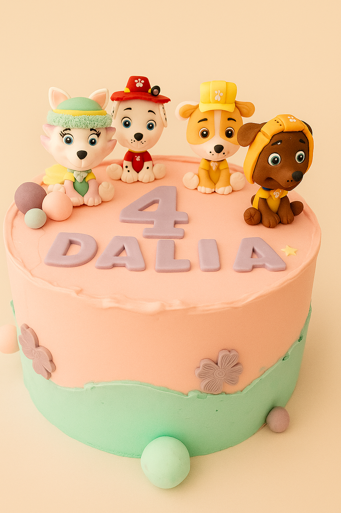
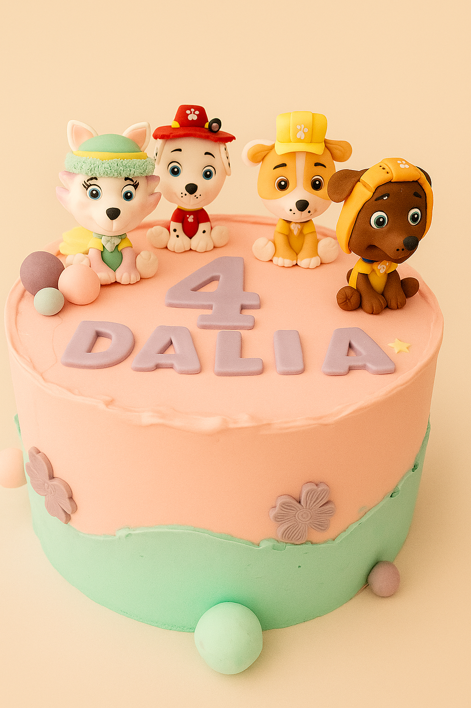
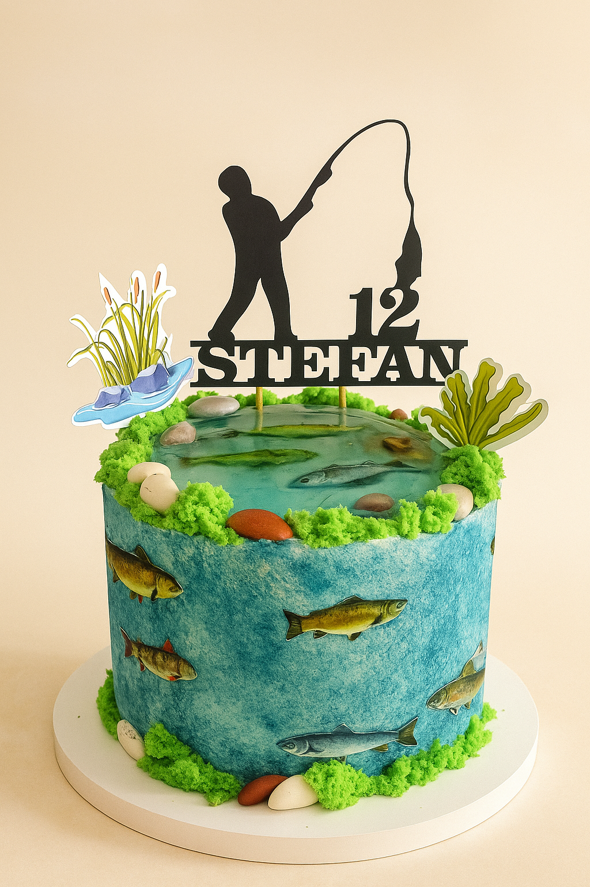
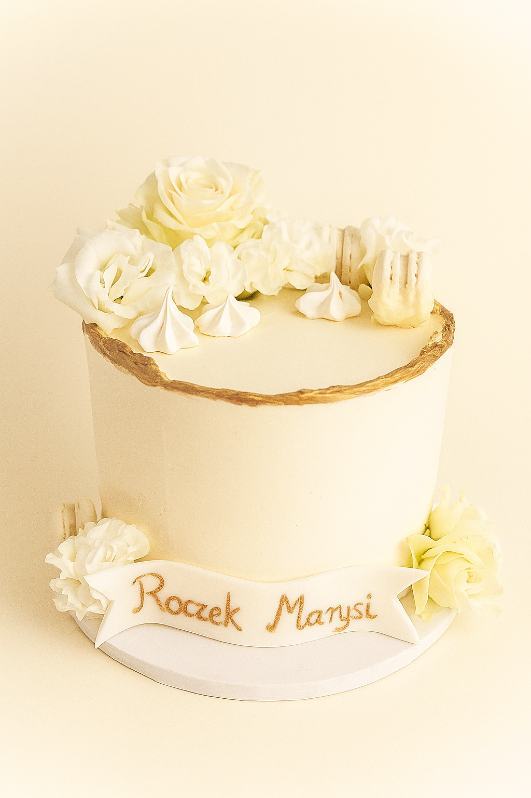
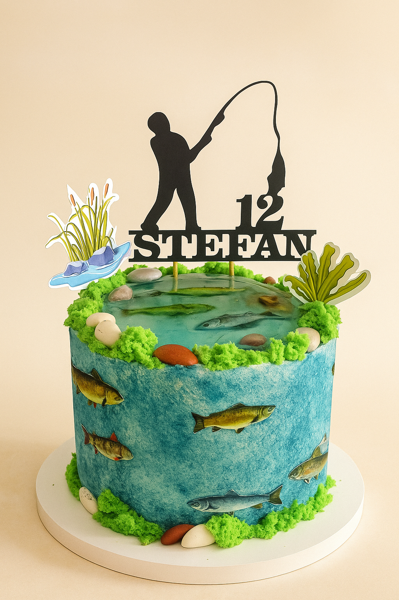
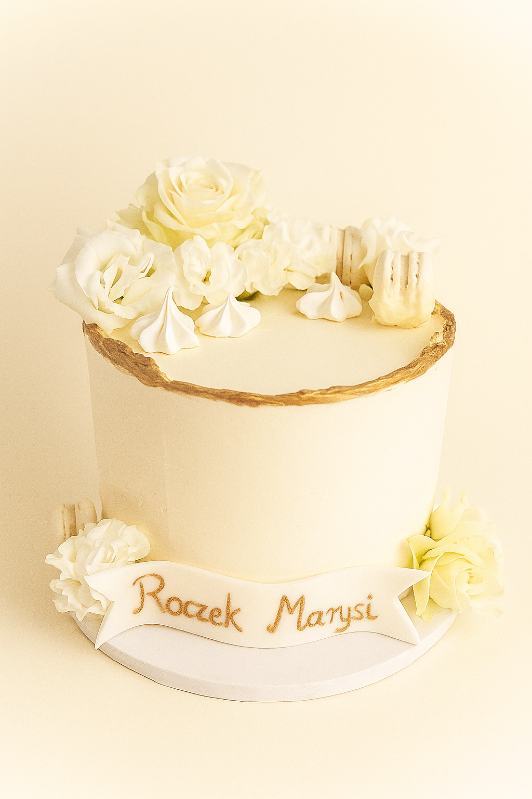

Torty okolicznościowe
Nie ma dwóch takich samych okazji – dlatego każdy tort, który powstaje w Carinie, jest tworzony na indywidualne zamówienie. Ty wybierasz smak biszkoptu, ulubione kremy, dodatki i styl dekoracji, a ja zajmuję się resztą.
Wspólnie stworzymy projekt idealnie dopasowany do charakteru Twojego wydarzenia – niezależnie od tego, czy świętujesz urodziny, chrzest, rocznicę, baby shower czy wieczór panieński. Każdy szczegół dopasujemy do Twoich oczekiwań, bo wierzę, że tort to coś więcej niż deser – to serce przyjęcia.
Wszystkie wypieki przygotowuję wyłącznie z naturalnych składników: puszystych biszkoptów, kremów na bazie prawdziwej śmietany i czekolady, świeżych owoców i chrupiących dodatków, które dodają wyjątkowej tekstury.
Standardowa kompozycja tortu to dwie warstwy nadzienia:
– krem + żelka owocowa
– krem + chrupiąca pralina
Całość otula cienka warstwa delikatnego tynku, który nie tylko pięknie wygląda, ale i doskonale smakuje.
📅 Zamówienia przyjmuję z minimum tygodniowym wyprzedzeniem.
📩 Masz pomysł na swój wymarzony tort? Napisz, prześlij inspiracje – a ja zamienię je w coś naprawdę wyjątkowego!
Słodki stół
Jeśli marzysz o przyjęciu, które zachwyci nie tylko smakiem, ale i estetyką – słodki stół to doskonały wybór. Tworzę kompozycje pełne różnorodnych deserów, które staną się ozdobą każdej uroczystości. Dbam o każdy detal – od jakości wypieków po elegancką aranżację stołu.
Co może znaleźć się na słodkim stole?
• Donuty w klasycznej i nowoczesnej odsłonie, eksponowane na specjalnej ściance
• Mini torciki i monoporcje z owocami i kremem
• Bezy z bitą śmietaną i świeżymi owocami
• Dekoracyjne babeczki z kremem i dodatkami sezonowymi
• Porcje tiramisu i deserów w pucharkach
• Rurki z kremem i ciasteczka z nadzieniem
• Eklery z cukrem pudrem lub polewą
• Makaroniki w różnych kolorach i smakach
• Deserki na patyku (cake popsy), idealne również dla dzieci
• Stylowe dekoracje z kwiatów i zieleni
Dlaczego warto?
• Indywidualne podejście do każdej realizacji – dopasowuję smaki i wygląd stołu do okazji oraz stylu przyjęcia
• Własnoręcznie przygotowywane wypieki na bazie sprawdzonych receptur
• Piękne, dopracowane aranżacje, które podkreślą charakter wydarzenia
• Możliwość pełnej personalizacji – kolory, styl, tematyka
• Zapewniam transport, montaż i demontaż na miejscu
Słodki stół to nie tylko deser – to doświadczenie, które goście zapamiętają na długo. Spraw, aby Twoja uroczystość była naprawdę wyjątkowa.
📅 Zamówienia przyjmuję z minimum tygodniowym wyprzedzeniem.
📩 Masz pomysł na swój wymarzone słodkości? Napisz, prześlij inspiracje – a ja zamienię je w coś naprawdę wyjątkowego!

 

 


